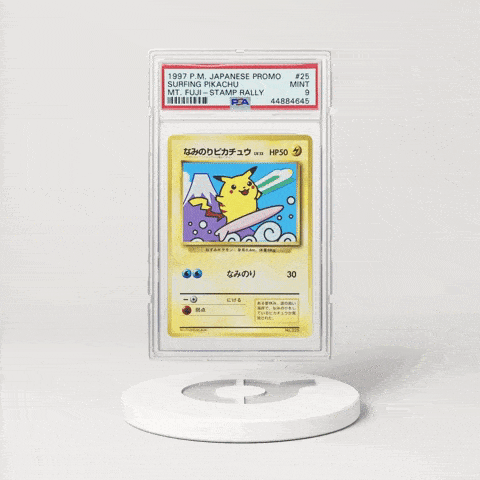
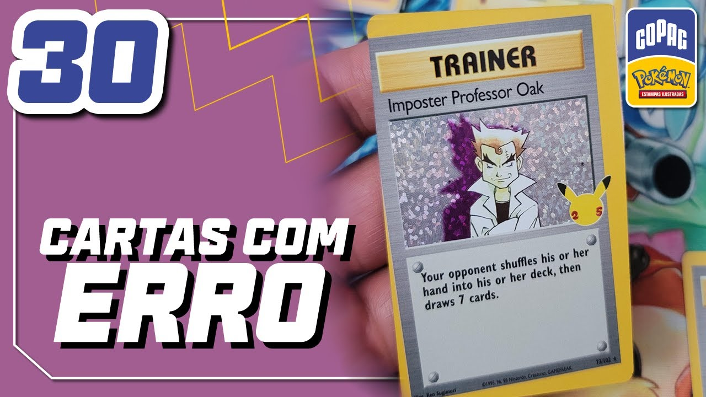

Organize sua coleção, encontre o que precisa e negocie com outros jogadores próximos.

Atualmente, a troca de cartas Pokémon acontece de forma desorganizada, muitas vezes em redes sociais ou eventos presenciais, dificultando encontrar cartas específicas e negociações seguras.
Nossa proposta é criar uma plataforma onde treinadores possam cadastrar suas cartas, encontrar outros usuários próximos e realizar trocas de maneira mais eficiente, prática e segura.
Considerada uma das cartas Pokémon mais raras do mundo, a Pikachu Illustrator foi distribuída apenas em concursos realizados no Japão durante os anos 90. Atualmente é uma das cartas mais valiosas da franquia.
O Charizard da coleção Base Set de 1999 é uma das cartas mais desejadas pelos colecionadores. Exemplares em perfeito estado podem valer milhares de dólares.
O Pokémon TCG é distribuído em diversos países e já foi lançado em vários idiomas, permitindo que colecionadores do mundo todo compartilhem a mesma paixão.
Algumas cartas já foram proibidas em torneios oficiais por serem consideradas fortes demais ou criarem estratégias que desequilibravam o jogo.
Desde o lançamento do Pokémon TCG, milhares de cartas foram produzidas, incluindo versões raras, promocionais e comemorativas.

Algumas cartas que apresentavam erros de fabricação acabaram se tornando extremamente valiosas. Para muitos colecionadores, esses defeitos tornam a carta ainda mais rara.